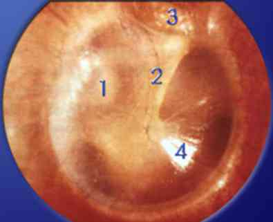
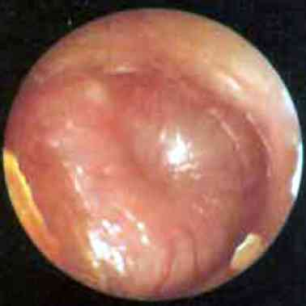

Bienvenue Sur Medical Education
Otite
Spécialité : infectieux / orl /
Points importants
-
Diagnostic otite = signes fonctionnels ou généraux associés à des signes otoscopiques
-
Définitions :
-
otite moyenne aiguë (OMA) = inflammation aiguë de la caisse du tympan
-
OMA purulente = existence d'un épanchement purulent ou mucopurulent dans la caisse du tympan
-
otite moyenne externe (OME) = dermo-épidermite de la peau du conduit auditif externe d'origine infectieuse
-
Rare chez l'adulte (pathologie infantile préférentielle)
-
Facteur favorisant = viral (rhinopharyngite)
-
Complication = méningite à pneumocoque (25% des méningites = point départ OMA purulente)
Présentation clinique / CIMU
SIGNES FONCTIONNELS
- otite moyenne aiguë (OMA) = inflammation aiguë de la caisse du tympan
- OMA purulente = existence d'un épanchement purulent ou mucopurulent dans la caisse du tympan
- otite moyenne externe (OME) = dermo-épidermite de la peau du conduit auditif externe d'origine infectieuse
Présentation clinique / CIMU
SIGNES FONCTIONNELS
Généraux
- Fièvre
Spécifiques
-
OMA :
- otalgie
- hypoacousie
-
OME :
- douleur du canal auditif externe
Non spécifiques
- Otorrhée - otorragie
- Douleur projetée = dentaire, articulation temporo-mandibulaire
En rapport avec complications
- Vertiges périphériques (labyrinthite)
- Céphalées et méningisme (vomissements, raideur nuque, photophobie)
- Troubles de la conscience avec ou sans signes de localisation neurologique (abcès cerveau, thrombophlébite septique)
- Convulsions (thrombophlébite cérébrale, du sinus latéral)
- Paralysies faciales
- Erythème rétro-auriculaire, tuméfaction cutanée oedémateuse pré-mastoidienne (mastoïdite)
CONTEXTE
Terrain
- Plus fréquents chez homme
- Incidence accrue dans milieux défavorisés urbains
Traitement usuel
- Récent : antibiotiques (motif / doses)
- Au long cours : corticoïdes, immunomodulateurs, antidiabétique
Antécédents
- Récent : rhinopharyngite
- Amygdalectomie
- Au long cours : déficit immunitaire, otites à répétition
- Allergique : pénicilline, ß-lactamines
Facteurs de risque
- Immunodépression - diabète
- Dysfonctionnement tubaire pathologique d'origine inflammatoire, mécanique (hypertrophie des végétations), congénitale
- Atteinte neuromusculaire
- Allergie non médicamenteuse (poussières, acariens) - pollution
- Exposition active / passive tabac
- Vie en collectivité, milieu socio-économique défavorisé
Circonstances de survenue
- Saisonnier (incidence maximale en hiver pour OMA)
-
OMA :
- infection ORL récente (rhinopharyngite +++)
-
OME :
- baignade
- corps étranger intra-canal auditif externe (coton tige)
- traumatisme
EXAMEN CLINIQUE
 _92 Photo Tympan normal
Signes spécifiques d’OMA purulente = otalgie associée à des signes généraux d’installation récente (cf signes non spécifiques) ainsi que des signes otoscopiques = otoscopie bilatérale et comparative - examen précautionneux (éviter traumatisme surajouté)
-
OMA - critères otoscopiques :
-
OMA congestive :
- tympan congestif , rouge (par dilatation des vaisseaux tympaniques) mais transparent et non bombé avec respect des reliefs normaux
- +/- douloureuse
-
OMA purulente :
-  _93 Photo OMA mucopurulente
- inflammation du tympan associée à un épanchement rétrotympanique extériorisé (otorrhée) ou non (opacité, effacement des reliefs normaux ou bombement)
-
Otite séromuqueuse OSM :
- épanchement rétro-tympanique sans inflammation marquée de la membrane tympanique, ni otalgie intense, ni signes généraux.
- peut évoluer vers un mode chronique
- Eliminer une perforation tympanique
- Nettoyage atraumatique du conduit auditif externe si otorrhée
- Si tympan mal vu (vision < 75% de la surface du tympan), avis ORL souhaitable. Des conditions d’examen difficiles ou un bouchon de cérumen peuvent empêcher la visualisation des tympans. Cependant en l’absence d’otalgie, le diagnostic d’OMA purulente est très improbable
-
OMA congestive :
- OME - examen conduit auditif externe = inflammation
Signes non spécifiques
-
Signes généraux :
- fièvre
- signes d’accompagnement (frissons, myalgies, céphalées)
- +/- toux
- rhinorrhée
- encombrement des voies aériennes supérieures
- vomissements
- diarrhée…
- Douleur à la palpation de l'articulation temporo-mandibulaire et pré-tragienne
- Ouverture buccale douloureuse
Signes d'étiologies
-
OMA congestive :
- rhinorrhée, toux (infection virale)
- examen de la gorge (pharyngite)
-
OMA mucopurulente :
- autre localisation infectieuse = conjonctivite purulente
- orientation bactérienne
- Haemophilus influenzae : syndrome otite - conjonctivite
- Pneumocoque : fièvre élevée > 38°5C, otalgie intense
Diagnostics différentiels
- Examen buccal (abcès dentaire)
- Lésions cutanées vésiculaires du conduit auditif externe, zone de Ramsay-Hunt (infection varicelle - zona)
Signes de complications
- Méningisme (en faveur méningite)
- Troubles neurologiques focaux (abcès cérébraux - thrombophlébite cérébrale du sinus latéral)
- Erythème rétro-auriculaire, tuméfaction cutanée oedémateuse pré-mastoidienne avec comblement du sillon et décollement du pavillon de l'oreille, douleur à la palpation de la table osseuse de l'os temporal (mastoïdite)
- Douleur rétro-orbitaire homolatérale (ostéite temporale)
- Examen des paires crâniennes : atteinte de l'abduction de l'oeil (ostéite temporale)
- Nystagmus associé à une perte d'audition (labyrinthite)
- Foyer de crépitants à l'auscultation pulmonaire (pneumopathie)
- Eliminer un souffle cardiaque (endocardite)
EXAMENS PARACLINIQUES SIMPLES
En fonction du terrain et/ou complications
. Si patient diabétique, glycémie capillaire (décompensation diabétique)
. Si douleur thoracique (pneumopathie), SpO2 (hypoxémie) - ECG (tachycardie sinusale)
CIMU
2 situations cliniques
- Situation A = otites moyennes aiguë et externe avec complications locorégionales et/ou générales
- Situation B = otites moyennes aiguë et externe non compliquées
CIMU
- Situation A = tri 2
- Situation B = tri 3-4
Signes paracliniques
Otite compliquée : bilan des complications
- Méningite
- Abcès cérébral
- Thrombophlébite cérébrale
- Mastoïdite
- Pneumopathie
- Endocardite
Otite non compliquée
- Pas d'indication à un bilan paraclinique.
Diagnostic étiologique
Par ordre de fréquence décroissante
OMA
- Streptococcus pneumoniae
- Haemophilus influenzae
- Branamella catarrhalis
-
Autres (mineur) :
- streptococcus pyogenes (streptocoque du groupe A)
- staphylococcus aureus
Diagnostic différentiel
OMA
- Otite externe
- Traumatisme auriculaire - corps étranger
- Perforation tympanique
- Pharyngite
- Douleur dentaire
- Douleur de l'articulation temporo-mandibulaire
OME
- Infection varicelle - zona au niveau zone Ramsay-Hunt
- Ostéomyélite base crâne
- Ostéome
- Furoncle
- Traumatique (blast - lacération)
- Dermatite allergique (post instillation de gouttes auriculaires d'antibiotiques)
- Bouchon de cérumen
- Corps étranger (coton tige)
-
Myringite aiguë ou chronique
Traitement
TRAITEMENT INTRAHOSPITALIER
Stabilisation initiale
-
Otite compliquée = traitement des complications :
- méningite
- abcès cérébral
- thrombophlébite cérébrale
- mastoïdite
- pneumopathie
- endocardite
-
Otite non compliquée :
-
OME :
- antalgiques PO pallier I = paracétamol 500 mg à 1g PO
- pas d'indication à une antibiotique voie générale
-
OMA :
- antipyrétiques - antalgiques : pallier I = paracétamol 500 mg à 1g PO. Si hyperalgique (EVA > 5), pallier II (ex. : paracétamol - codéiné 1 à 2 cps PO)
- OMA purulente => antibiotiques
- OMA congestive => pas d'indication à antibiothérapie - traitement symptomatique de la cause de rhinopharyngite
- pas d'indication au recours aux antibiotiques locaux ni AINS à doses anti-inflammatoires, ni corticoïdes
-
OME :
Suivi du traitement - Otite non compliquée
- Réévaluation à 48h par le médecin traitant
- En cas de signes d'aggravation ou persistance, évaluation par un spécialiste ORL
MEDICAMENTS
- Seules les OMA purulentes confirmées par visualisation des tympans justifient une antibiothérapie
- La prescription d’une antibiothérapie pour toute autre otite ou lorsque les tympans n’ont pas été vus doit être proscrite
OMA purulente
- Instillations locales de gouttes auriculaires corticoïdes et lidocaïne 1 à 5 gouttes 2 fois/j quand certitude de l'intégrité tympanique
-
Antalgiques - antipyrétiques PO :
- pallier I = paracétamol 500 mg à 1g PO /6 h
- si hyperalgique (EVA > 5), pallier II (ex : paracétamol - codéiné 1 à 2 cps PO / 6 h)
-
En première intention :
- amoxicilline PO 1g x 3 / j pendant 5 jours
- ou en cas d'allergie à la pénicilline sans contre-indication aux céphalosporines, C2G céfpodoxime 400 mg/j en 2 prises en 12h d’intervalle ou céfuroxirime – axétil 500 mg/j en 2 prises ou céfotiam 400 mg/j en 2 prises pendant 5 jours
- pristinamycine 2g/j en 2 prises ou cotrimoxazole (triméthroprime 160mg – sulfaméthoxazole 800mg) 2 comprimés par jour pendant 8 - 10 jours ou lévofloxacine 500mg/j en une prise en cas de contre-indication aux béta-lactamines (pénicillines et céphalosporines). Cependant pristinamycine ou cotrimoxazole (triméthroprime – sulfaméthoxazole) ou lévofloxacine sont recommandés sur la base d’arguments microbiologiques en l’absence d’étude clinique.
-
En cas d’échec :
- amoxicilline + acide clavulanique PO 1g × 3 / jour pendant 5 jours
OMA congestive
- Antipyrétiques
- Décongestionnants
- Antiseptiques locaux
OME
- Antalgiques PO Pallier I = paracétamol 500 mg à 1g PO / 6 h
- Instillations locales de gouttes auriculaires corticoïdes et/ou lidocaïne 1 à 5 gouttes 2 fois/j
- Si conduit rétréci => mise en place d'un tampon expansible dans le conduit pour favoriser la pénétration des gouttes et le maintien d'une concentration locale d'antibiotique élevée
-
Acidification du canal auriculaire par des antibiotiques locaux :
- fluoroquinolones ofloxacine gouttes auriculaires 4 instillations auriculaires/j pendant 7 jours
Surveillance
CLINIQUE
OMA mucopurulente : critères de recours à l'ORL (discuter paracentèse)
- Aggravation = 5 à 10% d'échec
- Persistance de signes fonctionnels ou généraux associés aux signes otoscopiques d'OMA purulente au-delà de 48 heures
- Réapparition des signes 4 jours après la fin du traitement (50% de guérison cependant 30% de récidives dans le mois)
OMA congestive
- Fièvre rarement au-delà 3 jours et apparition signes de complications au-delà 10 jours (OMA mucopurulente, sinusite maxillaire, adénophlegmon cervical, abcès rétropharyngé, laryngite aiguë sous-glottique, bronchite, pneumopathie)
OME = critères de recours à l'ORL
- Ecoulement et douleur = risque de cholestéatome
- Signes de complications = OMA
PARACLINIQUE
- Pas de suivi paraclinique nécessaire pour OMA ni OME
Devenir / orientation
CRITERES D'ADMISSION / DE SORTIE
-
Pas d'indication à une hospitalisation pour OMA ni OME simple
-
Traitement des complications
ORDONNANCE DE SORTIE
-
(cf chapitre médicaments)
RECOMMANDATIONS DE SORTIE
-
OME :
-
arrêt du tabagisme actif / passif
-
lavage prudent par coton-tige
-
protection auriculaire lors des baignades - pas de voyage en altitude
-
Surveillance pour OMA mucopurulente à pneumocoque, risque de complication générale plus élevée (pneumopathie, méningite)
-
OMA récidivante :
-
prévoir une consultation sans urgence auprès d'un ORL pour discuter d'un geste chirurgical en cas d'hypertrophie des végétations amyloïdes
Mécanisme / description
- arrêt du tabagisme actif / passif
- lavage prudent par coton-tige
- protection auriculaire lors des baignades - pas de voyage en altitude
-
prévoir une consultation sans urgence auprès d'un ORL pour discuter d'un geste chirurgical en cas d'hypertrophie des végétations amyloïdes
Mécanisme / description
Mécanisme / description
- Le conduit auditif externe, par sa longueur, permet la protection de oreille contre l'infection et la pénétration de corps étranger
- La portion extérieure du conduit produit du cérumen, à visée protectrice
- Environnement physiologiquement acide pour éviter l'entrée de bactéries au niveau de l'oreille
- Rhinopharynx et oreille moyenne sont tapissés par une même muqueuse respiratoire ciliée
- La caisse du tympan est ouverte sur le pharynx par un canal (trompe d'Eustache), perméable, permettant le drainage physiologique du mucus secrété dans l'oreille moyenne
- L'agression virale de l'épithélium respiratoire qui tapisse les fosses nasales, le pharynx et la caisse du tympan entraîne une modification des rapports entre les bactéries résidentes (pneumocoque, Haempohlius influenzae, Branhamella catarrhalis) et la muqueuse
- La disparition du mouvement mucociliaire favorise l'adhésion des bactéries et leur multiplication
- Leur drainage est compromis par l'oedème de la trompe d'Eustache, altérant la pression de l'oreille moyenne
- La modification des pressions au niveau de l'oreille moyenne est en négatif (le plus courant) ou positif par rapport à la pression atmosphérique
-
Prolifération des bactéries dans l'oreille moyenne par reflux, aspiration ou insufflation active
Bibliographie
-
John D Donaldson. Middle Ear, Acute Otitis Media, Medical Treatment. 2008 www.emedicine.com
-
Ashutosh Kacher, External Ear, Infections. 2007 www.emedicine.com
-
Debbie A Eaton, Complications of Otitis Media. 2007 www.emedicine.com
-
Antibiothérapie locale en ORL, AFSSAPS, recommandations 2004
-
Antibiothérapie par voie générale en pratique courante : otite moyenne aiguë, recommandations AFSSAPS 2001
-
Antibiothérapie par voie générale en pratique courante dans les infections respiratoires hautes de l’adulte et de l’enfant, recommandations de bonnes pratiques AFSSAPS 2011
Auteur(s) : Sabina FAJAL, Albéric GAYET